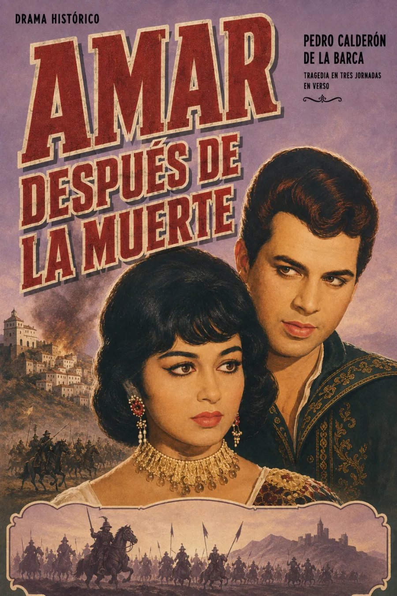

Escucha ahora
SINOPSIS
Drama de Pedro Calderón de la Barca ambientado en la rebelión de los moriscos de las Alpujarras (1568–1571), durante el reinado de Felipe II. Don Álvaro Tuzaní jura vengar la muerte de su esposa Clara, asesinada en la represión cristiana del levantamiento, en una de las pocas obras del teatro áureo que retrata con cierta simpatía el sufrimiento morisco frente a la violencia de la Corona.
Publicada en 1677 como El Tuzaní de la Alpujarra; la edición de 1691 lleva el título Amar después de la muerte. Historia editorial · Texto en la Biblioteca Virtual Miguel de Cervantes.
JORNADAS
Jornada I
Jornada II
Jornada III
RESEÑAS

Bueno